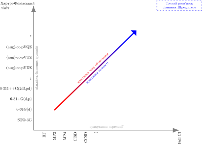

Квантово-механічні методи обчислення
5 Пост-Хартрі-Фоківські методи
§ 5.1 Вступ до електронної кореляції
5.1.1 Що таке електронна кореляція?
Метод Хартрі–Фока враховує лише обмінну взаємодію між електронами з однаковими спінами, але не описує узгодженого кулонівського руху частинок. Унаслідок цього точна хвильова функція системи відрізняється від однодетермінантного наближення, а різниця між точною енергією та енергією Хартрі–Фока визначає так звану кореляційну енергію:
\(\seteqnumber{0}{5.}{0}\)\begin{equation} E_{\text {corr}} = E_{\text {exact}} - E_\text {HF}. \end{equation}
Оскільки метод Хартрі–Фока не враховує кореляцію рухів електронів, його енергія завжди дещо вища (менш стабільна), ніж точна енергія системи. Відсутність електронної кореляції фактично призводить до переоцінки кулонівського відштовхування між електронами. На рис. 5.1 наведено схематичну ієрархію енергетичних рівнів, що ілюструє внесок електронної кореляції та різні рівні наближення в пост-Хартрі–Фоківських методах.
Як видно з рис. 5.1, енергія кореляції \(E_{\text {corr}}\) відповідає різниці між Хартрі–Фоківським лімітом і точним нерелятивістським розв’язком — це енергетичний ефект, який відображає узгоджений рух електронів, відсутній у методі Хартрі–Фока.
5.1.2 Типи електронної кореляції та відповідні методи
Залежно від природи відхилень від однодетермінантного опису розрізняють два основні типи електронної кореляції — динамічну та статичну (нединамічну).
Їхня природа тісно пов’язана з тим, чи достатньо для опису системи одного детермінанта Слейтера, чи потрібна комбінація кількох. Відповідно, методи, що враховують ці ефекти, поділяються на однореферентні та багатореферентні.
Динамічна кореляція відображає миттєве узгодження рухів електронів, зумовлене кулонівським відштовхуванням. Вона має короткодіапазонний характер і залишається важливою навіть тоді, коли система добре описується одним детермінантом. Цей ефект уточнює енергію, але майже не змінює форму хвильової функції.
Методи, що враховують динамічну кореляцію, — однореферентні: MPn, CI, CC. Вони базуються на збудженнях з одного (HF) детермінанта та дають точні результати для систем з однією домінантною конфігурацією.
Статична (нединамічна) кореляція.
Статична кореляція виникає, коли кілька детермінантів мають близькі енергії, і один детермінант (HF) не може адекватно описати систему. Вона відображає структурну неоднозначність основного стану та характерна для випадків квазівиродження орбіталей (розрив хімічного зв’язку, бірадикали, перехідні метали).
Методи, що враховують цей тип кореляції, — багатореферентні: CASSCF, MCSCF, MRCI.
Вони описують довгодіапазонні узгодження між електронами, змінюють форму хвильової функції й забезпечують правильну асимптотику енергії.
У більшості реальних систем обидва типи кореляції присутні одночасно: статична визначає основну структуру хвильової функції, а динамічна уточнює її енергію. Тому сучасні пост-Хартрі–Фоківські методи поєднують обидва підходи, забезпечуючи збалансований опис електронної взаємодії (див. табл. 5.1).
Далі ми детальніше розглянемо ці методи, зокрема ті з них, що реалізовані у програмному пакеті PySCF.
§ 5.2 Теорія збурень Møller–Plesset (MP2)
5.2.1 Теоретичні основи MP2
Теорія збурень Møller–Plesset (MP) — один із найпоширеніших пост-Хартрі–Фоківських методів для врахування електронної кореляції. Її ідея полягає у розкладі точного електронного гамільтоніана як суми відомої частини (оператора Фока з методу Хартрі–Фока) та «збурення», яке відповідає за кореляційні взаємодії, не враховані в середньому полі:
\(\seteqnumber{0}{5.}{1}\)\begin{equation} \hat {H}_e = \hat {H}_0 + \hat {V}. \end{equation}
Нульовим (незбуреним) наближенням у цьому підході є гамільтоніан Фока:
\[ \hat {H}_0 = \hat {F} = \sum _{i=1}^{N} \hat {f}(i), \]
де \(\hat {f}(i)\) — одноелектронний оператор Фока. Детермінант Слейтера \(\Phi _0\), складений із власних орбіталей оператора \(\hat {f}\), є власною функцією \(\hat {H}_0\) з власним значенням, що дорівнює сумі орбітальних енергій:
\[ \hat {H}_0 \Phi _0 = \left (\sum _{i=1}^{N} \varepsilon _i\right ) \Phi _0 = E^{(0)} \Phi _0. \]
Збуренням вважається різниця між точним електронним гамільтоніаном і оператором Фока:
\[ \hat {V} = \hat {H}_e - \hat {H}_0. \]
Оператор \(\hat {V}\) враховує ті миттєві корельовані рухи електронів, які були втрачені при усередненні поля в наближенні HF.
Енергію системи можна подати у вигляді ряду за параметром збурення \(\lambda \):
\(\seteqnumber{0}{5.}{2}\)\begin{equation} E = E^{(0)} + E^{(1)} + E^{(2)} + E^{(3)} + \ldots , \end{equation}
де:
-
• \(E^{(0)} = \sum _{i=1}^{N} \varepsilon _i\) — енергія нульового наближення (сума орбітальних енергій);
-
• \(E^{(1)}\) — перша поправка теорії збурень:
\(\seteqnumber{0}{5.}{3}\)\begin{equation*} E^{(1)} = \langle \Phi _0 | \hat {V} | \Phi _0 \rangle = \langle \Phi _0 | \hat {H}_e | \Phi _0 \rangle - \langle \Phi _0 | \hat {H}_0 | \Phi _0 \rangle = E_{\mathrm {HF}} - \sum _{i=1}^{N} \varepsilon _i. \end{equation*}
Ця поправка не дорівнює нулю, але вона лише компенсує подвійний підрахунок міжелектронної взаємодії, який виникає в сумі орбітальних енергій \(\sum _i \varepsilon _i\). Іншими словами, сума нульового та першого порядків дає просто енергію Хартрі–Фока:
\[ E_{\mathrm {MP1}} = E^{(0)} + E^{(1)} = E_{\mathrm {HF}}. \]
Оскільки це не дає жодної нової інформації порівняно з самим методом HF, MP1 не використовується як окремий метод — він тотожний Хартрі–Фоку.
-
• \(E^{(2)}\) — друга поправка теорії збурень, яка є першою поправкою, що містить нову фізичну інформацію порівняно з методом Хартрі–Фока. Саме вона враховує електронну кореляцію, втрачену в однодетермінантному наближенні HF.
-
• \(E^{(3)}, E^{(4)}\) — наступні уточнення (MP3, MP4), які додають вищі кореляційні ефекти.
Оскільки вихідною точкою є один детермінант Слейтера, MP-метод належить до однореферентних підходів, які описують динамічну кореляцію в системах з однією домінантною конфігурацією. Інтуїтивно це означає, що електрони миттєво реагують на присутність одне одного і уникають взаємного наближення, що призводить до додаткового зниження енергії порівняно з незалежним описом у наближенні Хартрі–Фока.
Формула енергії MP2
У другому порядку теорії збурень енергія записується як:
\(\seteqnumber{0}{5.}{3}\)\begin{equation} \label {eq:MP2energy_general} E^{(2)} = \sum _{n \neq 0} \frac {|\langle \Psi _n^{(0)} | \hat {V} | \Phi _0 \rangle |^2}{E^{(0)} - E_n^{(0)}}, \end{equation}
де сума береться по всіх незбурених станах \(\Psi _n^{(0)}\), окрім основного.
У випадку MP теорії незбуреними хвильовими функціями \(\Psi _n^{(0)}\) є всі можливі детермінанти Слейтера, побудовані з молекулярних орбіталей методу HF. Нехай \(i, j, k, \ldots \) позначають зайняті спінорбіталі в основному стані \(\Phi _0\), а \(a, b, c, \ldots \) — віртуальні (незайняті) орбіталі. Збуджені детермінанти класифікують за кількістю замінених орбіталей:
-
• \(\Phi _i^a\) — одноразово збуджений детермінант (одна орбіталь \(i\) замінена на \(a\));
-
• \(\Phi _{ij}^{ab}\) — двічі збуджений детермінант (орбіталі \(i, j\) замінені на \(a, b\));
-
• і так далі для вищих збуджень.
Можна показати (теорема Бріллюена), що одноразово збуджені детермінанти не вносять внеску до другого порядку: \(\langle \Phi _i^a | \hat {V} | \Phi _0 \rangle = 0\). Тому основний внесок у MP2 дають двічі збуджені детермінанти \(\Phi _{ij}^{ab}\), і саме вони описують електронну кореляцію — скорельований рух пар електронів.
У практичних обчисленнях поправка другого порядку подається у вигляді:
\(\seteqnumber{0}{5.}{4}\)\begin{equation} \label {eq:MP2energy} E^{(2)} = \frac {1}{4} \sum _{ijab} \frac {|\langle ij || ab \rangle |^2} {\varepsilon _i + \varepsilon _j - \varepsilon _a - \varepsilon _b}, \end{equation}
де:
-
• \(i,j\) — індекси зайнятих орбіталей,
-
• \(a,b\) — індекси віртуальних орбіталей,
-
• \(\langle ij || ab \rangle \) — антисиметризовані двоелектронні інтеграли,
-
• \(\varepsilon _k\) — орбітальні енергії з HF-розрахунку,
-
• множник \(1/4\) враховує симетрію при підсумовуванні по всіх парах індексів.
Метод, що зупиняється на другому порядку теорії збурень, називається MP2 (Møller-Plesset другого порядку). Повна енергія MP2 дорівнює:
\(\seteqnumber{0}{5.}{5}\)\begin{equation} E_{\mathrm {MP2}} = E_{\mathrm {HF}} + E^{(2)}. \end{equation}
Найнижчий порядок такого розкладу — MP2 — описує зниження енергії системи за рахунок корельованого руху електронів, коли збурення дозволяє їм «обмінюватися» з віртуальними станами та уникати взаємного наближення.
5.2.2 Практичний гайд: розрахунок MP2 у PySCF
Метод MP2 у PySCF реалізований як надбудова над звичайним розрахунком Хартрі–Фока (RHF або UHF). Тобто спочатку потрібно виконати HF-розрахунок, а потім передати отриманий об’єкт у модуль mp.
# ============================================================
# mp2_example.py
# Демонстрація: розрахунок енергії MP2 для молекули води
# ============================================================
from pyscf import gto, scf, mp
# --- 1. Задання молекули ---
mol = gto.Mole()
mol.atom = '''
O 0.0000 0.0000 0.0000
H 0.0000 0.7570 0.5870
H 0.0000 -0.7570 0.5870
'''
mol.basis = 'cc-pVDZ'
mol.unit = 'Angstrom'
mol.build()
# --- 2. Розрахунок Хартрі–Фока ---
mf = scf.RHF(mol)
mf.verbose = 0
E_HF = mf.kernel()
print(f'Hartree–Fock energy = {E_HF:.10f} Hartree')
# --- 3. Увімкнення MP2 ---
mp2_calc = mp.MP2(mf)
mp2_calc.verbose = 0
mp2_result = mp2_calc.kernel() # Повертає (E_corr, T2_amplitudes)
E_corr = mp2_result[0] # Кореляційна енергія (float)
E_MP2 = E_HF + E_corr # Загальна MP2 енергія
print(f'MP2 total energy = {E_MP2:.10f} Hartree')
print(f'MP2 correlation energy = {E_corr:.10f} Hartree')Пояснення кроків:
-
1. mol — створення об’єкта молекули (як завжди у PySCF);
-
2. scf.RHF(mol) — запуск Хартрі–Фока;
-
3. mp.MP2(mf) — ініціалізація MP2 з уже готовим SCF-об’єктом;
-
4. kernel() — обчислення повної та кореляційної енергії.
Типовий вивід:
Hartree–Fock energy = -76.0267656731 Hartree
MP2 total energy = -76.2307856559 Hartree
MP2 correlation energy = -0.2040199828 HartreeВажливо: Для відкритих оболонок використовуйте mp.UMP2 (на базі UHF).
5.2.3 Практичні аспекти та обчислювальна складність MP2
Заморожене ядро (frozen core).
В теорії MP2 енергія кореляції обчислюється за формулою (5.5).
Глибокі внутрішні орбіталі (core orbitals), наприклад \(1s\)-орбіталі кисню у молекулі води, мають великі за модулем енергії \(\varepsilon _i\). Через це знаменник у наведеному виразі стає дуже великим, а внесок таких орбіталей у суму — незначним:
\[ \frac {|\langle ij || ab \rangle |^2} {\varepsilon _i + \varepsilon _j - \varepsilon _a - \varepsilon _b} \approx 0. \]
До того ж, ці орбіталі локалізовані поблизу ядра і слабо взаємодіють з валентними електронами, тобто практично не впливають на хімічні властивості.
Щоб уникнути зайвих обчислень, у програмі PySCF часто задають параметр frozen, який «заморожує» кілька найнижчих (core) орбіталей:
mp2_calc = mp.MP2(mf).set(frozen=2)Це означає, що дві найнижчі орбіталі не включаються у розрахунок енергії кореляції. Таким чином зменшується кількість зайнятих орбіталей \(N_\text {occ}\), а відповідно — кількість комбінацій у сумі за \(i,j,a,b\), що суттєво скорочує час розрахунку без втрати точності для валентної області.
Такий підхід має сенс, якщо система не містить сильно корельованих внутрішніх електронів, тобто коли валентна і внутрішня області добре розділені за енергією.
Метод MP2 є першим після Хартрі–Фока, який враховує електронну кореляцію, але навіть він є досить ресурсоємним. Це зумовлено структурою формули для \(E_{\text {MP2}}\), де присутня четверна сума:
\[ \sum _{ijab} \quad \Rightarrow \quad N_\text {occ}^2 N_\text {virt}^2 \sim O(N^4), \]
де \(N_\text {occ}\) — число зайнятих, а \(N_\text {virt}\) — число віртуальних орбіталей.
Однак найважчий етап — не сама сума, а перетворення двоелектронних інтегралів з базису атомних орбіталей (AO) у базис молекулярних орбіталей (MO):
\(\seteqnumber{0}{5.}{6}\)\begin{equation} (ij|ab) = \sum _{\mu \nu \lambda \sigma } C_{\mu i} C_{\nu j} C_{\lambda a} C_{\sigma b} (\mu \nu |\lambda \sigma ), \end{equation}
де \(C_{\mu p}\) — коефіцієнти розкладу орбіталей у базисі AO. Кожна така трансформація масштабується як \(O(N^5)\), оскільки для кожного набору індексів потрібно виконати сумування за чотирма базисними функціями.
Отже, загальна складність MP2 зростає як
\[ T_{\text {MP2}} \sim O(N^5), \]
що обмежує застосування цього методу до систем з приблизно 40–60 атомами (залежно від базису та апаратних ресурсів).
Для наочності в таблиці 5.2 наведено порівняння точності та обчислювальної складності HF та MP2.
Для пришвидшення розрахунків у PySCF застосовують такі прийоми:
-
• Використання опції frozen для замороження ядерних орбіталей;
-
• Застосування апроксимації RI-MP2 (Resolution of Identity), яка замінює чотириіндексні інтеграли на трьохіндексні, зменшуючи масштабність до \(O(N^3)\);
-
• Локалізація орбіталей (LMP2), що дозволяє ефективно розв’язувати великі системи за рахунок відсікання слабких міжорбітальних взаємодій.
# ============================================================
# File: mp2_optimization_demo.py
# Оптимізація MP2-розрахунків у PySCF:
# - базовий MP2
# - заморожування ядерних орбіталей (frozen core)
# - використання RI-MP2 (density fitting)
# - локалізація орбіталей (Pipek–Mezey)
# - порівняння з експериментом
# ============================================================
from pyscf import gto, scf, mp, lo
# --- 1. Створення молекули ---
mol = gto.M(
atom = "O 0 0 0; H 0 -0.757 0.587; H 0 0.757 0.587",
basis = "cc-pVTZ",
verbose = 0
)
# --- 2. SCF розрахунок (RHF) ---
mf = scf.RHF(mol).run(verbose=0)
# --- 3. Стандартний MP2 (усі орбіталі активні) ---
mp2_full = mp.MP2(mf)
mp2_full.verbose = 0
mp2_full.kernel()
print(f"MP2 (усі орбіталі): E = {mp2_full.e_tot:.8f} Ha")
# --- 4. MP2 із замороженим ядром ---
mp2_frozen = mp.MP2(mf).set(frozen=2) # заморожуємо 1s-орбіталі Оксигену
mp2_frozen.verbose = 0
mp2_frozen.kernel()
print(f"MP2 (frozen core): E = {mp2_frozen.e_tot:.8f} Ha")
# --- 5. RI-MP2 (Resolution of Identity) ---
mf_df = mf.density_fit() # перехід до скороченого інтегрального представлення
mp2_df = mp.MP2(mf_df)
mp2_df.verbose = 0
mp2_df.kernel()
print(f"RI-MP2 (density fit): E = {mp2_df.e_tot:.8f} Ha")
# --- 6. Локалізація орбіталей (Pipek–Mezey) ---
loc_orb = lo.PM(mf.mol, mf.mo_coeff).kernel()
print(f"Pipek–Mezey локалізація виконана: {loc_orb.shape[1]} орбіталей")
# --- 7. Порівняння з експериментом ---
E_exp = -76.438 # експериментальна повна енергія води при 0 K (Ha)
print("\n=== Порівняння енергій ===")
print(f"HF = {mf.e_tot:.8f} Ha")
print(f"MP2(full)= {mp2_full.e_tot:.8f} Ha")
print(f"MP2(froz)= {mp2_frozen.e_tot:.8f} Ha")
print(f"RI-MP2 = {mp2_df.e_tot:.8f} Ha")
print(f"Exp. = {E_exp:.8f} Ha (експеримент)")
print("\n=== Відхилення від експерименту ===")
print(f"HF : {mf.e_tot - E_exp:+.6f} Ha")
print(f"MP2(full) : {mp2_full.e_tot - E_exp:+.6f} Ha")
print(f"MP2(froz) : {mp2_frozen.e_tot - E_exp:+.6f} Ha")
print(f"RI-MP2 : {mp2_df.e_tot - E_exp:+.6f} Ha")5.2.4 Приклади MP2-розрахунків у PySCF
-
1. MP2 розрахунок атома Неону:
-
2. MP2 для відкритих оболонок (UMP2):
-
3. Систематичне порівняння HF vs MP2:
-
4. Залежність MP2 від базисного набору:
MP2 сильно залежить від базису, особливо потрібні функції високих \(l\).
5.2.5 Переваги та недоліки MP2
-
• Відносно швидкий (\(\mathcal {O}(N^5)\)) порівняно з іншими post-HF.
-
• Добре відновлює динамічну кореляцію.
-
• Size-consistent (правильне масштабування для великих систем).
-
• Доступний для великих атомів/молекул.
-
• Добрий базис для вищих методів (MP3, MP4).
-
• Не виправляє забруднення спіном UHF.
-
• Може розходитись для систем з малим gap HOMO-LUMO.
-
• Погано працює для сильно корельованих систем.
-
• Потребує великих базисів для точних результатів.
-
• Не варіаційний (може давати енергію нижчу за точну).
5.2.6 Рекомендації по використанню MP2
При розриві зв’язків або в багатореферентних системах (де один детермінант вже неадекватний) MP2 дає хибні результати.
§ 5.3 Основи методу конфігураційної взаємодії
Метод конфігураційної взаємодії (Configuration Interaction, CI) — це варіаційний пост-Хартрі–Фоківський підхід, у якому хвильова функція системи представляється як лінійна комбінація детермінантів Слейтера, що відповідають різним конфігураціям розподілу електронів по орбіталях (див. рис. 5.2):
\(\seteqnumber{0}{5.}{7}\)\begin{equation} |\Psi _{\text {CI}}\rangle = c_0 |\Phi _0\rangle + \sum _i^{\text {occ}} \sum _a^{\text {virt}} c_i^a |\Phi _i^a\rangle + \sum _{i<j} \sum _{a<b} c_{ij}^{ab} |\Phi _{ij}^{ab}\rangle + \ldots \end{equation}
де:
-
• \(|\Phi _0\rangle \) — детермінант Хартрі–Фока (основна конфігурація);
-
• \(|\Phi _i^a\rangle \) — одинично збуджений (Singly excited) детермінант, у якому один електрон переходить із зайнятої орбіталі \(i\) на віртуальну орбіталь \(a\);
-
• \(|\Phi _{ij}^{ab}\rangle \) — подвійно збуджений (Doubly excited) детермінант — два електрони переходять із орбіталей \(i,j\) на \(a,b\);
-
• \(|\Phi _{ijk}^{abc}\rangle \) — потрійно збуджений (Triply excited) детермінант;
-
• і т. д. — вищі збудження (quadruple, quintuple, …).
Таким чином, ураховується змішування кількох електронних конфігурацій, що дозволяє відтворити ефекти електронної кореляції, відсутні в однодетермінантному наближенні Хартрі–Фока.
Фізичний зміст методу. Ідея CI полягає у варіаційному визначенні коефіцієнтів \(c_0, c_i^a, c_{ij}^{ab}, \ldots \) шляхом мінімізації середнього значення енергії Гамільтоніана:
\[ E_{\text {CI}} = \frac {\langle \Psi _{\text {CI}} | \hat {H} | \Psi _{\text {CI}} \rangle }{\langle \Psi _{\text {CI}} | \Psi _{\text {CI}} \rangle }. \]
Отримана хвильова функція є лінійною комбінацією конфігурацій, що найкраще описує істинний багаточастинковий стан системи в межах обраного базисного набору. Чим більше збуджень враховано, тим точніше відтворюється електронна кореляція.
-
• CIS (Configuration Interaction Singles) — метод одиночних збуджень: ураховуються лише \(|\Phi _i^a\rangle \). Використовується переважно для опису збуджених електронних станів, але не покращує енергію основного стану.
-
• CISD (Configuration Interaction Singles and Doubles) — одиничні (Singles) та подвійні (Doubles) збудження. Найуживаніший практичний варіант, що враховує значну частину динамічної кореляції.
-
• CISDT — одиничні (Singles) , подвійні (Doubles) та потрійні (Triples) збудження; точніший, але обчислювально значно дорожчий.
-
• Full CI (повна конфігураційна взаємодія) — ураховуються всі можливі збудження у межах вибраного базису. Це точне розв’язання рівняння Шредінґера для заданого базису, яке слугує еталоном для інших методів.
Реалізація методів CI у програмному пакеті PySCF
У системі PySCF реалізовано кілька основних варіантів конфігураційної взаємодії, які охоплюють найпоширеніші рівні наближення:
-
• CISD (pyscf.ci.CISD) — метод одиночних і подвійних збуджень, що базується на детермінанті Хартрі–Фока. Це найуживаніша реалізація CI у PySCF; підтримуються обмежені (RHF) на необмежені (UHF) варіанти хвильової функції.
-
• Full CI (pyscf.fci.FCI) — повна конфігураційна взаємодія у межах заданого базису. Використовується для малих систем як еталонне («точне») розв’язання рівняння Шредінґера.
Інші варіанти CI (CISDT, CISDTQ тощо) у PySCF не реалізовані безпосередньо, оскільки їхня обчислювальна складність різко зростає з розміром системи. Для опису більш високих збуджень і точнішого врахування електронної кореляції в PySCF зазвичай використовують методи зв’язаних кластерів (CCSD, CCSD(T)) або багатоконфігураційні підходи (CASSCF, MRCI).
Ключові особливості API
-
• CISD: метод .kernel() повертає кореляційну енергію та CI-вектор. Повна енергія обчислюється як \(E_{\text {tot}} = E_{\text {HF}} + E_{\text {corr}}\).
-
• Full CI: метод .kernel() повертає повну енергію та CI-вектор. Кореляційна енергія обчислюється як \(E_{\text {corr}} = E_{\text {tot}} - E_{\text {HF}}\).
-
• CI-вектор (civec) містить коефіцієнти розкладу хвильової функції за базисом конфігурацій (детермінантів Слейтера).
Інші варіанти CI (CISDT, CISDTQ тощо) у PySCF не реалізовані безпосередньо, оскільки їхня обчислювальна складність різко зростає з розміром системи. Для опису більш високих збуджень і точнішого врахування електронної кореляції в PySCF зазвичай використовують методи зв’язаних кластерів (CCSD, CCSD(T)) або багатоконфігураційні підходи (CASSCF, MRCI).
5.3.1 Метод CISD
В методі CISD (Configuration Interaction with Singles and Doubles) враховуються лише одиночні (S) та подвійні (D) збудження відносно детермінанта Хартрі–Фока, Хвильова функція приймає вигляд:
\(\seteqnumber{0}{5.}{8}\)\begin{equation} \label {eq:CI} |\Psi _{\text {CISD}}\rangle = c_0|\Phi _0\rangle + \sum _i^N \sum _a c_i^a |\Phi _i^a\rangle + \frac {1}{2}\sum _{ij}^{N} \sum _{ab} c_{ij}^{ab} |\Phi _{ij}^{ab}\rangle \end{equation}
де \(|\Phi _i^a\rangle \) — детермінант із одиночним збудженням електрона з орбіталі \(i\) у \(a\), а \(|\Phi _{ij}^{ab}\rangle \) — детермінант із подвійним збудженням.
Мінімальний приклад реалізації наведено у файлі :
import pyscf
mol = pyscf.M(
atom = 'H 0 0 0; F 0 0 1.1',
basis = 'ccpvdz')
mf = mol.HF().run()
mycc = mf.CISD().run()
print('RCISD correlation energy', mycc.e_corr)
mf = mol.UHF().run()
mycc = mf.CISD().run()
print('UCISD correlation energy', mycc.e_corr)Приклад розрахунку CISD для молекули \(\mathrm {H_{2}}\)
У програмі наведено приклад розрахунку методами CISD для молекули  .
.
Розглянемо результати проботи програми:
converged SCF energy = -1.11675930739643
E(HF) = -1.116759 a.u.
E(CISD) = -1.137284 a.u.
E_corr = -0.020525 a.u.
|Ψ_CISD⟩ =
-0.993647 × |10⟩ # HF reference
+ 0.112544 × |01⟩ # ij=0,0→ab=1,1
Норма: ∑c² = 1.000000
Кількість детермінантів: 2
Внесок HF: 98.73%
Кореляційний внесок: 1.27%Отримані значення повністю узгоджуються з теоретичними передбаченнями, наведеними вище. Метод CISD приводить до зменшення повної енергії порівняно з HF:
\[ E_{\text {CISD}} - E_{\text {HF}} = \Delta E_{\text {corr}} = -0.0205~\text {Ha}, \]
що відповідає кореляційній енергії, тобто енергії, яка втрачається у наближенні Хартрі–Фока через відсутність електронної кореляції.
Отримана в рамках методу CISD хвильова функція має вигляд:
\(\seteqnumber{0}{5.}{9}\)\begin{equation*} |\Psi _{\text {CISD}}\rangle = c_0 \Phi _0 + c_{11}^{22} \Phi _{11}^{22} = -0.9936\,|10\rangle + 0.1125\,|01\rangle . \end{equation*}
Позначення детермінантів
У PySCF використовується бітовий шаблон зайнятості орбіталей, де 1 — орбіталь заповнена двома електронами, 0 — порожня.
-
• \(|10\rangle \equiv |\sigma _g^2\rangle \equiv \Phi _0 \):
детермінант Хартрі–Фока (основний стан) — обидва електрони на зв’язуючій орбіталі \(\sigma _g\). -
• \(|01\rangle \equiv |\sigma _u^2\rangle \equiv \Phi _{11}^{22} \): подвійне збудження — обидва електрони перейшли на антизв’язуючу орбіталь \(\sigma _u\).
Отримані коефіцієнти \(c_0 \approx 0.99\) і \(c_{11}^{22} \approx 0.11\) свідчать, що основний детермінант Хартрі–Фока домінує, на нього припадає близько \(98.7\%\) ваги хвильової функції. Другий детермінант (\(|01\rangle \)) відповідає подвійному збудженню \(ij\!\to \!ab\) і вносить лише \(1.3\%\) — саме ця невелика домішка забезпечує зниження енергії та відтворює динамічну електронну кореляцію.
Отже, з аналізу отриманих коефіцієнтів можна зробити кілька важливих висновків щодо характеру електронної кореляції в системі:
-
• Велике значення коефіцієнта при \(|\mathrm {HF}\rangle \) (\(c_0 \approx 1\)) свідчить, що система має слабку кореляцію, тобто хвильова функція Хартрі–Фока вже досить добра апроксимація істинного стану.
-
• Невеликий внесок збуджених детермінантів (\(1.3\%\)) відображає динамічну кореляцію — короткодистанційне уникання електронів у просторі.
Таким чином, практичний приклад із пакета PySCF демонструє роботу методу CISD у найпростішій системі — молекулі . Результати підтверджують, що CISD коригує енергію Хартрі–Фока за рахунок урахування невеликої кількості збуджених конфігурацій, які описують динамічну кореляцію електронів. Попри простоту системи, ця демонстрація наочно показує, як
варіаційна комбінація детермінантів Слейтера покращує точність розрахунку, не змінюючи при цьому основної фізичної суті стану.
5.3.2 Full CI — точний розв’язок
Full CI включає всі можливі детермінанти і дає точну хвильову функцію та енергію в межах обраного базису:
\(\seteqnumber{0}{5.}{9}\)\begin{equation} E_{FCI} = \min _{\{c_i\}} \langle \Psi _{FCI} | \hat {H} | \Psi _{FCI} \rangle \end{equation}
Мінімальний приклад реалізації наведено у файлі :
import pyscf
# Створення молекули
mol = pyscf.M(
atom = 'H 0 0 0; F 0 0 1.1', # у ангстремах
basis = 'sto3g',
symmetry = True,
)
# Розрахунок у наближенні Хартрі–Фока
myhf = mol.RHF().run()
# Розв’язання задачі повної конфігураційної взаємодії (FCI)
cisolver = pyscf.fci.FCI(myhf)
energy = cisolver.kernel()[0]
print(f"E(FCI) = {energy:.12f}")При використанні методу FCI кількість детермінантів зростає як:
\(\seteqnumber{0}{5.}{10}\)\begin{equation} N_{det} = \binom {N_{orb}}{N_{\alpha }} \times \binom {N_{orb}}{N_{\beta }} \end{equation}
Для 10 електронів у 20 орбіталях: \(N_{det} \approx 10^{10}\) детермінантів! Саме тому Full CI можлива лише для дуже малих систем і використовується переважно як еталон для перевірки точності наближених методів.
Приклад розрахунку Full CI для молекули \(\mathrm {CH_{4}}\)
Для демонстрації можливостей методу проведемо розрахунок молекули метану  . Реалізація наведена у файлі , де порівнюються результати трьох рівнів наближення: HF, CISD та FCI. Такий підхід дозволяє кількісно оцінити внесок електронної кореляції та перевірити, наскільки добре метод
CISD відтворює повний CI-результат.
. Реалізація наведена у файлі , де порівнюються результати трьох рівнів наближення: HF, CISD та FCI. Такий підхід дозволяє кількісно оцінити внесок електронної кореляції та перевірити, наскільки добре метод
CISD відтворює повний CI-результат.
Підсумкові дані обчислень, включно з енергіями, часовими витратами та часткою відтвореної кореляційної енергії, наведено нижче у виведенні програми:
Електронів: 10
Орбіталей: 17
Базис: 6-31g
======================================================================
ПІДСУМКОВІ РЕЗУЛЬТАТИ
======================================================================
Метод Енергія (Hartree) Відносно HF (mHa) Час (с)
--------------------------------------------------------------------------------
HF -40.18039876 0.000 0.863
CISD -40.29474827 -114.350 1.145
FCI -40.30127222 -120.873 161.998
Experiment (0K) -40.43230000 — —
======================================================================
АНАЛІЗ КОРЕЛЯЦІЙНИХ ЕФЕКТІВ
======================================================================
Кореляція врахована CISD: -114.350 mHartree
Повна кореляція (FCI): -120.873 mHartree
Втрачена кореляція (T+Q+...): -6.524 mHartree
CISD враховує: 94.6% кореляції
Втрачено (трипли+квадрупли): 5.4% кореляції
Розмірність FCI простору: 38291344 детермінантів
Час розрахунку FCI зростає як ~N⁶ для 17 орбіталейМетод Хартрі–Фока (HF) задає однодетермінантну незбурену основу, в якій не враховується жодна форма електронної кореляції. Тому його енергія найвища (найменш стабільна).
Перехід до CISD (Configuration Interaction з одинарними та подвійними збудженнями) дає суттєве зниження енергії — приблизно на \(114.4\) мХартрі. Це зниження відповідає урахуванню динамічної кореляції між електронами, оскільки подвійні збудження описують миттєві флуктуації їхнього положення. Однак CISD не є size-extensive методом, тобто не масштабується коректно з розміром системи. Крім того, воно обмежене лише збудженнями до другого порядку і не враховує внески від триплетних та квадруплетних збуджень.
Повний CI (FCI) враховує всі можливі детермінанти у заданому базисі, забезпечуючи точне нерелятивістське рішення рівняння Шредінґера в межах цього базису. Розмірність простору FCI у цьому прикладі становить \(3.8\times 10^{7}\) детермінантів, що демонструє експоненціальне зростання обчислювальної складності (час розрахунку \(\propto N^6\) для 17 орбіталей).
Порівняння показує, що CISD відтворює близько 94.6% кореляційної енергії, втрачаючи лише \(5.4\%\), що припадає на вищі збудження (\(T\), \(Q\), тощо). Це узгоджується з теоретичними очікуваннями: методи CI обмеженого рівня наближають FCI знизу, поступово відтворюючи точну енергію при розширенні простору збуджень.
Зі збільшенням розміру базису (наприклад, cc-pVTZ, aug-cc-pVQZ) розрахунок Full CI поступово наближається до межі повного базису (complete basis set limit), де відхилення від експерименту стає мінімальним.
§ 5.4 Метод зв’язаних кластерів
5.4.1 Ідея методу
У методі зв’язаних кластерів оператор збудження записують у експоненційній формі:
\(\seteqnumber{0}{5.}{11}\)\begin{equation} \label {eq:CC} | \Psi _{CC} \rangle = e^{\hat {T}} | \Phi _0 \rangle = (1 + \hat {T} + \frac {1}{2!} \hat {T}^2 + \frac {1}{3!} \hat {T}^3 + \cdots ) | \Phi _0 \rangle , \end{equation}
де оператор \(\hat {T}\)
\(\seteqnumber{0}{5.}{12}\)\begin{equation} \hat {T} = \hat {T}_1 + \hat {T}_2 + \hat {T}_3 + \cdots , \end{equation}
називають кластерним оператором. В кожен член \(\hat {T}_n\) відповідає всім можливим \(n\)-кратним збудженням відносно детермінанта Хартрі-Фока \(|\Phi _0 \rangle \):
\(\seteqnumber{0}{5.}{13}\)\begin{equation*} \hat {T}_1 = \sum _{i,a} t_i^a \hat {t}_i, \quad \hat {T}_2 = \sum _{i>j} \sum _{a>b} t_{ij}^{ab} \hat {t}_{ij}^{ab}, \ldots \end{equation*}
Коефіцієнти (кластерні амплітуди) \(t\) є невідомими параметрами, які слід визначити. Отже, хвильова функція в методі CC матиме вигляд:
\(\seteqnumber{0}{5.}{13}\)\begin{multline*} | \Psi _{CC} \rangle = e^{\hat {T}} | \Phi _0 \rangle = (1 + \hat {T}_1 + \hat {T}_2 + \frac {1}{2} (\hat {T}_1 + \hat {T}_2)^2 + \cdots ) | \Phi _0 \rangle = \\ = \left [ 1 + \hat {T}_1 + \hat {T}_2 + \frac {1}{2} (\hat {T}_1 \hat {T}_1 + 2\hat {T}_1 \hat {T}_2 + \hat {T}_2 \hat {T}_2) + \cdots \right ] | \Phi _0 \rangle = \\ = | \Phi _0 \rangle + \sum _{i,a} t_i^a | \Phi _i^a \rangle + \sum _{i>j} \sum _{a>b} t_{ij}^{ab} | \Phi _{ij}^{ab} \rangle + \frac {1}{2} \sum _{i,a} \sum _{j,b} t_i^a t_j^b | \Phi _{ij}^{ab} \rangle + \cdots \\ + \frac {1}{2} \sum _{i,a} \sum _{j>k,b>c} t_i^a t_{jk}^{bc} | \Phi _{ijk}^{abc} \rangle + \cdots \end{multline*}
Коментар
На перший погляд, експоненціальна форма виглядає складнішою, ніж звичайна лінійна комбінація. Проте її фундаментальна перевага полягає у властивості експоненти:
\(\seteqnumber{0}{5.}{13}\)\begin{equation} e^{\hat {T}} = 1 + \hat {T} + \frac {1}{2!}\hat {T}^2 + \frac {1}{3!}\hat {T}^3 + \cdots , \end{equation}
що означає, що навіть якщо явно враховуються лише \(\hat {T}_1\) і \(\hat {T}_2\) (метод CCSD), хвильова функція автоматично містить внески від трикратних, чотирикратних та вищих збуджень через добутки \(\hat {T}_1^2\), \(\hat {T}_1\hat {T}_2\) тощо. Тобто експонента \(e^{\hat {T}}\) автоматично породжує всі можливі добутки збуджень. Тому метод CC враховує складені конфігурації навіть при обмеженій кількості параметрів — на відміну від лінійного CI.
На сьогоднішній день розроблено низку процедур для розрахунку амплітуд методу CC, ми опишемо лише в загальних рисах одну з них. Рівняння для власних значень функції CC має вигляд
\(\seteqnumber{0}{5.}{14}\)\begin{equation*} (\widehat {H} - E) | \Psi _{CC} \rangle = 0. \end{equation*}
Тут \(E \) — повна енергія методу CC. Помножимо цю рівність зліва на \(\Phi _0^* \) і проведемо інтегрування за електронними координатами
\(\seteqnumber{0}{5.}{14}\)\begin{equation*} \int \Phi _0^* (\widehat {H} - E) \Psi _{CC} d\tau = \left \langle \Phi _0 | \widehat {H} - E | \Psi _{CC} \right \rangle = 0. \end{equation*}
Виразимо \(| \Psi _{CC} \rangle \) через оператор збудження та референтний детермінант \(\Phi _0 \):
\(\seteqnumber{0}{5.}{14}\)\begin{multline} \label {eq:CC-l} \left \langle \Phi _0 | \widehat {H} - E | \Psi _{CC} \right \rangle = \left \langle \Phi _0 | \widehat {H} - E | (1 + \widehat {T}_1 + \widehat {T}_2 + \ldots ) \Phi _0 \right \rangle = \\ =\left \langle \Phi _0 | \widehat {H} | \Phi _0 \right \rangle + \left \langle \Phi _0 | \widehat {H} | \widehat {T}_1 \Phi _0 \right \rangle + \left \langle \Phi _0 | \widehat {H} | \widehat {T}_2 \Phi _0 \right \rangle + \left \langle \Phi _0 | \widehat {H} | \widehat {T}_3 \Phi _0 \right \rangle + \ldots - \\ - E \left \langle \Phi _0 | \Phi _0 \right \rangle - E \left \langle \Phi _0 | \widehat {T}_1 \Phi _0 \right \rangle - \ldots = E_{\text {HF}} + \sum _{i>j} \sum _{a>b} t_{ij}^{ab} \left \langle \Phi _0 | \Phi _{ij}^{ab} \right \rangle - E = 0. \end{multline}
Тут враховано, що матричні елементи між функцією SCF та однократно збудженими конфігураціями, так само як і матричні елементи між детермінантними функціями, що відрізняються більш ніж двома спін-орбіталями, дорівнюють нулю; крім того, всі збуджені конфігурації ортогональні до \(\Phi _0 \). Використовуючи правила Слейтера для матричних елементів між детермінантними функціями, отримуємо
\[ E_{\text {HF}} + \sum _{i>j} \sum _{a>b} t_{ij}^{ab} \left \langle \Phi _0 | \Phi _{ij}^{ab} \right \rangle = E_{\text {HF}} + \sum _{i>j} \sum _{a>b} t_{ij}^{ab} ( ab | ij ) = E = E_{\text {HF}} + E_{\text {cor}}. \]
Звідси випливає, що енергія кореляції дорівнює
\(\seteqnumber{0}{5.}{15}\)\begin{equation*} E_{\text {cor}} = \sum _{i>j} \sum _{a>b} t_{ij}^{ab} ( ab | ij ). \end{equation*}
Замінюючи в рівнянні (5.15) \(\left \langle \Phi _0 \right |\) на \(\left \langle \Phi _i^a \right |\), \(\left \langle \Phi _{ij}^{ab} \right |\), …, отримуємо ланцюжок рівнянь для знаходження амплітуд:
\(\seteqnumber{0}{5.}{15}\)\begin{equation} \label {eq:cc-projection} \begin{aligned} \left \langle \Phi _i^a | \widehat {H} - E | \Psi _{CC} \right \rangle &= 0, \\ \left \langle \Phi _{ij}^{ab} | \widehat {H} - E | \Psi _{CC} \right \rangle &= 0, \ldots \end {aligned} \end{equation}
В ці рівняння в якості коефіцієнтів при невідомих (\(t_{i}^{a}, t_{ij}^{ab}, \ldots \)) входять різниці енергій МО та комбінації двохелектронних інтегралів. Рівняння розв’язують ітераційно до досягнення заданої точності.
Коментар
Метод CC не є варіаційним, оскільки рівняння для амплітуд \(t\) не отримуються з мінімізації функціонала енергії, а випливають із проєкційної умови (5.16), тому енергія методу не підкоряється варіаційному принципу. Іншими словами, \(E_{\text {CC}}\) не обов’язково є верхньою межею істинної енергії — вона може бути навіть нижчою за точне значення \(E_{\text {FCI}}\), що неможливо для варіаційних методів.
5.4.2 Наближення в методі CC: CCSD і CCSD(T)
У практичних розрахунках повна експоненційна форма хвильової функції методу зв’язаних кластерів:
\[ |\Psi _{\text {CC}}\rangle = e^{\hat {T}} |\Phi _0\rangle , \]
де
\[ \hat {T} = \hat {T}_1 + \hat {T}_2 + \hat {T}_3 + \dots + \hat {T}_N, \]
залишається, звісно, нескінченною, адже кількість можливих багатоелектронних збуджень зростає комбінаційно з числом електронів. Тому необхідно робити наближення, обмежуючи порядок збуджень.
Наближення CCSD Найпоширеніше робоче наближення — це
\[ \hat {T} \approx \hat {T}_1 + \hat {T}_2, \]
тобто враховуються лише однократні та дворазові збудження. Таке наближення позначається як CCSD (від англ. Coupled Cluster with Single and Double excitations).
Оператор хвильової функції має вигляд:
\[ |\Psi _{\text {CCSD}}\rangle = e^{\hat {T}_1 + \hat {T}_2} |\Phi _0\rangle . \]
Хоча формально ми не включаємо потрійні й вищі збудження, експоненційна форма гарантує, що частина їхнього ефекту враховується автоматично через добутки нижчих операторів, наприклад:
\[ \frac {1}{2!}\hat {T}_1^2 \sim \text {подвійні збудження}, \quad \hat {T}_1 \hat {T}_2 \sim \text {потрійні збудження}. \]
Тобто навіть CCSD описує взаємодію між різними рівнями кореляції значно точніше, ніж метод CISD (конфігураційна взаємодія з одиничними та подвійними збудженнями).
Корекція (T): «золотий стандарт» Для більшої точності часто додають внесок потрійних збуджень \(\hat {T}_3\) у вигляді неітераційної поправки, яку обчислюють на основі вже отриманих амплітуд \(\hat {T}_1, \hat {T}_2\). Таке наближення позначається як CCSD(T).
Символ (T) означає, що потрійні збудження враховані perturbatively, тобто за теорією збурень. Така схема зберігає високу точність, наближену до повного CCSDT, але з обчислювальною складністю всього \(\mathcal {O}(N^7)\) замість \(\mathcal {O}(N^8)\)–\(\mathcal {O}(N^{10})\) для повного варіанта.
Практичне значення Метод CCSD(T) виявився настільки надійним у відтворенні експериментальних енергій, геометрій і частот коливань, що його часто називають «золотим стандартом» квантової хімії. Для невеликих і середніх молекул похибка енергії зв’язку зазвичай не перевищує \(1{-}2~\text {kcal/mol}\), тобто досягає хімічної точності.
| Метод | Враховані збудження | Тип наближення |
|
CCSD |
\(\hat {T}_1, \hat {T}_2\) |
Ітераційне |
|
CCSD(T) |
\(\hat {T}_1, \hat {T}_2\) + корекція \(\hat {T}_3\) |
Ітераційно + збурювально |
|
CCSDT |
\(\hat {T}_1, \hat {T}_2, \hat {T}_3\) |
Повне, ітераційне |
Таким чином, CCSD(T) поєднує фізичну повноту опису з практичною ефективністю й залишається основним методом високоточної квантової хімії для систем до кількох десятків атомів.
5.4.3 Приклади розрахунків у PySCF
Базове використання методів CC
Розглянемо послідовно, як увімкнути різні варіанти методу зв’язаних кластерів у бібліотеці PySCF:
from pyscf import gto, scf, cc
mol = gto.M(
atom = 'H 0 0 0; F 0 0 1.1',
basis = 'cc-pvqz',
verbose = 0
)
# Розрахунок HF
mf = scf.RHF(mol).run()
# CCSD
cc = cc.CCSD(mf)
cc.kernel()
# CCSD з наступною (T)-корекцією
et = cc.ccsd_t()
print(f"Енергія HF: {mf.e_tot:.4f} Ha")
print(f"Енергія CCSD: {cc.e_tot:.4f} Ha")
print(f"Поправка (T): {et:.4f} Ha")
print(f"Енергія CCSD(T): {cc.e_tot + et:.4f} Ha")
print(f"Експеримент: {-100.4489} Ha")Демонстрація властивостей CC (амплітуди та коефіцієнти) для молекули \(\mathrm {HF}\)
Для ілюстрації практичного застосування методу зв’язаних кластерів розглянемо обчислення енергії молекули фтороводню () у базисі cc-pVDZ. Розрахунки виконуються у середовищі PySCF, починаючи з розв’язку у наближенні Хартрі–Фока, після чого проводиться кореляційне уточнення у методі CCSD та з урахуванням пертурбативної корекції (T).
У файлі наведено повний скрипт , в якому:
-
• розраховується повна та кореляційна енергія у HF, CCSD і CCSD(T);
-
• аналізуються амплітуди збуджень \(T_1 \) та \(T_2 \);
-
• будується розклад хвильової функції \(|\Psi _{\text {CCSD}}\rangle \) у вигляді суперпозиції детермінантів з найбільшими коефіцієнтами.
Отримані результати показують, що метод CCSD враховує основну частину динамічної електронної кореляції, знижуючи енергію молекули приблизно на \(0.21~E_h\) порівняно з HF. Додаткова корекція (T) вносить лише невеликий внесок (порядку кількох ккал/моль), що відповідає фізичному змісту пертурбативного врахування потрійних збуджень.
5.4.4 \(T_1\)-діагностика
Однореферентні методи, розглянуті вище, передбачають, що хвильова функція системи добре описується одним детермінантом Хартрі–Фока. Проте у випадках, коли в системі присутня статична (нединамічна) кореляція — наприклад, при розриві зв’язку, у відкритооболонкових системах або за наявності кількох близьких за енергією конфігурацій — таке наближення стає непридатним.
Для кількісної оцінки ступеня мультиреферентності використовується \(T_1\)-діагностика (\(T_1\) diagnostic), запропонована Лі та Тейлором (Lee & Taylor, 1989). Вона визначається через амплітуди одиночних збуджень \(t_i^a\) у методі CCSD:
\(\seteqnumber{0}{5.}{16}\)\begin{equation} T_1 = \sqrt {\frac {1}{n_\text {occ}} \sum _{i,a} (t_i^a)^2}, \end{equation}
де сума ведеться за всіма зайнятими (\(i\)) та віртуальними (\(a\)) орбіталями, а \(n_\text {occ}\) — кількість зайнятих орбіталей.
Фізичний зміст. Амплітуди \(t_i^a\) характеризують внесок одноелектронних збуджень у хвильову функцію \(|\Psi _{\text {CC}}\rangle = e^{\hat {T}}|\Phi _0\rangle \). Якщо система добре описується однією конфігурацією, амплітуди одиночних збуджень є малими, і \(T_1\) має невелике значення. Зростання \(T_1\) свідчить про сильне змішування детермінантів та появу мультиреферентного характеру хвильової функції.
Типові орієнтири. Для закритооболонкових молекул, які коректно описуються методами MP2 або CCSD, характерні значення
\[ T_1 < 0.02. \]
Якщо ж \(T_1 > 0.02\), система, ймовірно, має мультиреферентний характер, і результати однодетермінантних методів можуть бути ненадійними. У таких випадках доцільно застосовувати багатореферентні методи, зокрема CASSCF або NEVPT2.
Практичне обчислення. У пакеті PySCF значення \(T_1\) можна отримати після виконання розрахунку CCSD:
from pyscf import cc
mycc = cc.CCSD(mf).run()
T1 = mycc.t1_diagnostic()
print("T1 diagnostic =", T1)У прикладі для молекули у базисі cc-pVDZ отримано \(T_1 \approx 0.016\):
======================================================================
ДІАГНОСТИКА АМПЛІТУД
======================================================================
‖T₁‖ = 0.015823
max|T₁| = 0.008790 ✓ Одноконфігураційна системаМале значення \(T_1\) свідчить про відсутність суттєвої статичної кореляції та підтверджує придатність методів CCSD і CCSD(T). Основний внесок у хвильову функцію \(|\Psi _{\text {CCSD}}\rangle = e^{\hat {T}}|\Phi _0\rangle \) вносять подвійні збудження (\(T_2\)), що узгоджується з природою динамічної електронної кореляції у двоелектронних парах. Амплітуди одиночних збуджень залишаються малими, оскільки вони переважно компенсують недосконалість базису та орбіталей Хартрі–Фока.
Коментар
Разом із нормою \(‖T_1‖\) у програмних виводах зазвичай наводиться також найбільша за модулем амплітуда
\[ \max |T_1| = \max _{i,a} |t_i^a|. \]
Цей параметр не є формальною діагностикою, проте наочно показує масштаб окремих одиночних збуджень. Якщо \(\max |T_1| \ll 0.02\), система є справді однореферентною; великі ж значення (>0.05) сигналізують про можливу статичну кореляцію.
§ 5.5 Метод повного активного простору конфігурацій
Метод Хартрі–Фока описує електронну структуру одним детермінантом Слейтера — це називають одноконфігураційним підходом. Такий опис працює добре для систем, де один розподіл електронів по орбіталях чітко домінує. Однак для систем з відкритими оболонками, близькими за енергією орбіталями або перехідними металами часто потрібно враховувати кілька конфігурацій одночасно.
У багатоконфігураційному описі хвильова функція — це суперпозиція детермінантів:
\(\seteqnumber{0}{5.}{17}\)\begin{equation} \label {eq:CAS_WF} |\Psi \rangle = \sum _I C_I |\Phi _I\rangle . \end{equation}
Методи конфігураційної взаємодії (CI) будують таку суперпозицію на основі одного референсного детермінанта — зазвичай основного стану Хартрі–Фока \(|\Phi _0\rangle \). З орбіталей HF генеруються збуджені конфігурації (single, double excitations тощо), і варіюються тільки коефіцієнти \(C_I\), а орбіталі залишаються фіксованими.
Це дозволяє врахувати динамічну кореляцію, але орбіталі залишаються неоптимальними для багатоконфігураційного стану.
Однак, метод CASSCF (Complete Active Space Self-Consistent Field) йде далі: він оптимізує не тільки коефіцієнти \(C_I\), але й самі орбіталі для багатоконфігураційної хвильової функції. Ключова відмінність від CI: у CASSCF орбіталі адаптуються до багатоконфігураційної природи системи, тоді як у CI вони залишаються орбіталями Хартрі–Фока, оптимізованими для одноконфігураційного стану. Це робить CASSCF особливо ефективним для опису статичної кореляції — ситуацій, коли кілька конфігурацій мають близькі енергії.
5.5.1 Ідея методу
У методі CASSCF всі орбіталі поділяють на три групи (див. рис. 5.3):
-
1. Core (остовні) — завжди подвійно зайняті;
-
2. Active (активні) — між ними відбувається перерозподіл електронів; саме тут виконується повний CI;
-
3. Virtual (віртуальні) — залишаються порожніми.
Якщо у вибраному активному просторі міститься \(n_{\text {act}}\) електронів на \(m_{\text {act}}\) орбіталях, то кількість можливих детермінантів визначається комбінаційно:
\[ N_{\text {conf}} = \binom {2m_{\text {act}}}{n_{\text {act}}}. \]
Хвильова функція має структуру
\[ |\Psi _{\mathrm {CASSCF}}\rangle = \sum _{I=1}^{N_{\text {conf}}} C_I\, |\Phi _I(\{\phi _p\}_{\mathrm {active}})\rangle \otimes |\Phi _{\mathrm {core}}\rangle , \]
де \(|\Phi _{\mathrm {core}}\rangle \) — фіксована остовна частина, а \(|\Phi _I(\{\phi _p\}_{\mathrm {active}})\rangle \) — усі можливі розподіли \(n_{\text {act}}\) електронів по активних орбіталях.
Оптимізація виконується ітеративно:
-
• при фіксованих орбіталях розв’язується CI-задача у активному просторі → знаходяться \(C_I\);
-
• при фіксованих \(C_I\) оптимізуються орбіталі для мінімізації енергії;
-
• цикл повторюється до збіжності.
Таким чином метод забезпечує самоузгоджений опис статичної кореляції, що виникає у системах з кількома близькими за енергією конфігураціями.
5.5.2 Позначення CASSCF(n,m)
Позначення CASSCF(n,m) є загальноприйнятою хімічною нотацією, яку використовують у статтях, підручниках і методичних описах: \(n\) — число електронів, а \(m\) — число орбіталей в активному просторі.
Розглянемо кілька прикладів вибору активного простору.
Атом берилію : \(1s^2\, 2s^2\)
Електрони \(1s^2\) — заморожене ядро. Два валентні електрони на \(2s\) потребують опису їхньої кореляції. Орбіталі \(2p\) близькі за енергією до \(2s\), тому їх треба включити. Додатково, для кращого опису, беруть орбіталі \(3s\) і \(3p\). Активний простір:
\[ \{2s, 2p_x, 2p_y, 2p_z, 3s, 3p_x, 3p_y, 3p_z\} \]
Отже, маємо: 8 орбіталей, 4 електрони \(\rightarrow \) CASSCF(4,8).
Атом вуглецю : \(1s^2\, 2s^2\, 2p^2\)
Валентні електрони — це \(2s^2\, 2p^2\) (чотири електрони). Природний вибір — орбіталі валентної оболонки:
\[ \{2s, 2p_x, 2p_y, 2p_z\} \]
Отже, маємо: 4 орбіталі, 4 електрони \(\rightarrow \) CASSCF(4,4).
Орбіталі \(3s\) і \(3p\) далекі за енергією і не потрібні.
Атом хрому :
Основна особливість — п’ять вироджених \(d\)-орбіталей з п’ятьма електронами плюс один електрон на \(4s\). Активний простір:
\[ \{3d_{xy}, 3d_{yz}, 3d_{zx}, 3d_{x^2-y^2}, 3d_{z^2}\} \]
Отже, маємо: 5 орбіталей, 6 електронів \(\rightarrow \) CASSCF(6,5).
Орбіталь \(4s\) часто не включають в активний простір, або розглядають розширений варіант CASSCF(6,6), якщо потрібен детальніший опис.
5.5.3 Реалізація методу в PySCF
У PySCF багатоконфігураційні методи реалізовані в модулі mcscf, який має два основних варіанти: CASCI та CASSCF. У CASCI хвильова функція записується як лінійна комбінація детермінантів Слейтера (5.18), а коефіцієнти розкладу знаходяться у варіаційній процедурі. На відміну від загальних методів CI, детермінанти в CASCI генеруються тільки з активного простору, що еквівалентно виконанню повного CI (FCI) на підмножині молекулярних орбіталей. Орбіталі залишаються фіксованими протягом розрахунку CASCI. На відміну від цього, в розрахунку CASSCF орбіталі оптимізуються ітеративно: виконується крок CASCI, потім орбіталі оновлюються, знову виконується CASCI, і процес повторюється до збіжності — аналогічно до самоузгодженої процедури Хартрі-Фока.
Розглянемо практичний приклад застосування методу CASSCF для молекули азоту. Такий розрахунок демонструє, як вибір активного простору впливає на якість опису багатоконфігураційної природи хімічного зв’язку.
Виклик методу виконується як mcscf.CASSCF(mf, ncas=6, nelecas=6), де ncas=6 — число активних орбіталей, а nelecas=6 — число активних електронів, що заповнюють ці орбіталі.
# Порівняння різних активних просторів для молекули N2
from pyscf import gto, scf, mcscf, fci
# 1. Будуємо молекулу
mol = gto.Mole()
mol.atom = '''
N 0.0 0.0 0.0
N 0.0 0.0 1.1
'''
mol.basis = 'cc-pvdz'
mol.spin = 0
mol.build()
# 2. Розрахунок Хартрі-Фока
mf = scf.RHF(mol)
E_HF = mf.kernel()
# 3. Повний CI (еталон)
myci = fci.FCI(mf)
E_FCI = myci.kernel()[0]
# 4. Порівняння різних активних просторів
cas_spaces = [
(2, 2), # тільки пі-орбіталі
(6, 6), # всі валентні орбіталі
(8, 8), # валентні + додаткова пара
(10, 10) # розширений простір
]
print(f"E(HF) = {E_HF:.8f} Hartree")
print(f"E(FCI) = {E_FCI:.8f} Hartree")
print("\nПорівняння активних просторів:\n")
print("CAS Енергія (Hartree) Кореляція (mH) Відновлено (%)")
print("-" * 70)
for ncas, nelecas in cas_spaces:
mc = mcscf.CASSCF(mf, ncas, nelecas)
mc.verbose = 0
E_CAS = mc.kernel()
corr_cas = (E_CAS - E_HF) * 1000
corr_fci = (E_FCI - E_HF) * 1000
percent = (E_CAS - E_HF) / (E_FCI - E_HF) * 100
print(f"({nelecas},{ncas}) {E_CAS:.8f} "
f"{corr_cas:8.2f} {percent:6.1f}")
print(f"\nКореляційна енергія FCI: {corr_fci:.2f} mHartree")Результати показують:
-
• CASSCF(2,2) — мінімальний простір (тільки \(\pi \)-орбіталі): відновлює лише 30–40% кореляції, недостатньо для опису потрійного зв’язку;
-
• CASSCF(6,6) — валентний простір (\(\sigma \), \(\pi \) та їх антизв’язувальні): відновлює 70–80% кореляції, оптимальний баланс точності та обчислювальних витрат;
-
• CASSCF(8,8) та CASSCF(10,10) — розширені простори: додаткове покращення 5–10%, але суттєво зростає вартість розрахунку (FCI у великому просторі).
Цей приклад ілюструє ключовий принцип вибору активного простору: він має включати орбіталі з сильною статичною кореляцією (близькі за енергією, near-degenerate), а розширення простору дає швидко спадаючу віддачу.
5.5.4 Вибір активного простору
Правильний вибір активного простору є центральним етапом у побудові багатоконфігураційної хвильової функції. Від адекватності активного простору визначається, чи буде метод CASSCF (або спрощений CASCI) здатний описати статичну електронну кореляцію системи.
На практиці формування активного простору — це завжди ітеративний процес: початковий природний вибір, пробний розрахунок, аналіз заселеностей та уточнення набору орбіталей. Базові принципи вибору активного простору полягають в наступному:
-
1. Включати орбіталі, близькі за енергією. Зазвичай це останні зайняті та перші віртуальні орбіталі. Вони визначають основний внесок у статичну кореляцію.
-
2. Включати хімічно активні орбіталі. Орбіталі, що беруть участь у реакційних шляхах, розривах, утворенні зв’язків, \(\pi \)-системи, вироджені \(d/f\)-orbitals тощо.
-
3. Баланс між розміром і точністю. Число детермінантів у CAS росте експоненційно зі збільшенням числа орбіталей. Потрібно знайти мінімальний фізично правильний набір.
-
4. Робота з виродженими групами. Усі вироджені орбіталі (наприклад, \(e_g, t_{2g}, \pi \)-пари) мають входити або виключатися разом — інакше оптимізація порушує симетрію.
5.5.5 State-averaged CASSCF (усереднений за станами CASSCF)
У звичайному методі CASSCF оптимізація орбіталей проводиться лише для одного електронного стану (частіше за все — основного). Проте у багатьох випадках потрібно одночасно враховувати кілька станів: різні мультиплети, вироджені стани або ті, між якими відбуваються оптичні переходи. Для цього застосовують метод State-Averaged CASSCF (SA-CASSCF).
У SA-CASSCF орбіталі оптимізуються не для одного стану, а для спільного усередненого енергетичного функціонала, що включає кілька електронних станів:
\[ E_{\text {avg}} = \sum _k w_k \, E_k, \]
де \(E_k = \langle \Psi _k | \hat {H} | \Psi _k \rangle \) — енергії окремих станів, а \(w_k\) — вагові коефіцієнти (часто рівні між собою).
Таким чином, всі обрані стани «впливають» на формування єдиного набору молекулярних орбіталей, який є прийнятним для кожного з них.
Метод SA-CASSCF є необхідним у ситуаціях, коли:
-
• існують вироджені або майже вироджені електронні стани;
-
• потрібно порівнювати або описувати збуджені стани на тій самій орбітальній основі, що й основний;
-
• вивчаються оптичні або спінові переходи між кількома станами.
Усереднення робить потенціальні енергетичні поверхні гладкими та забезпечує коректний опис областей, де два або більше станів зближуються або утворюють конічні перетини.
У пакеті PySCF SA-CASSCF реалізовано через модуль mcscf.state_average, де користувач задає список вагових коефіцієнтів та кількість станів, які враховуються під час оптимізації.
from pyscf import gto, scf, mcscf
mol = gto.M(atom='N 0 0 0; N 0 0 1.1', basis='6-31g')
mf = scf.RHF(mol).run()
# Дві хвильові функції CASSCF з різними мультиплетами
mc = mcscf.CASSCF(mf, ncas=6, nelecas=6)
mcsa = mc.state_average([0.5, 0.5]) # дві стани з рівними вагами
mcsa.kernel()Після виконання розрахунку програма повертає усереднені енергії станів та єдині орбіталі, які можна далі використовувати в методах NEVPT2 для точнішого врахування динамічної кореляції.
Розглянемо атом Карбону, для якого характерна наявність кількох низьколежачих електронних станів. Основний стан має мультиплетність \(S = 1\) (триплет, \(^{3}P\)), а найближчий збуджений — \(S = 0\) (синглет, \(^{1}D\)). Ці стани близькі за енергією і описуються подібними набором орбіталей. Якщо виконати незалежну оптимізацію орбіталей для кожного, результати будуть несумісними, що ускладнить порівняння енергій або побудову потенціальних поверхонь.
Метод State-Averaged CASSCF розв’язує цю проблему. Він одночасно оптимізує орбіталі для кількох електронних станів, мінімізуючи середню енергію:
\[ E_{\text {avg}} = \tfrac {1}{2}(E_{^{3}P} + E_{^{1}D}), \]
та забезпечує єдиний набір орбіталей, спільний для обох конфігурацій.
В файлі наведено приклад програми, яка виконує такий розрахунок: вона одночасно обчислює два електронні стани атома Карбону — основний триплетний (\(^{3}P\)) і збуджений синглетний (\(^{1}D\)), оптимізуючи орбіталі для обох і виводячи усереднену енергію та різницю енергій (збудження \(^{3}P \rightarrow {}^{1}D\)).
5.5.6 NEVPT2 — динамічна кореляція поверх CASSCF
Метод CASSCF враховує переважно статичну електронну кореляцію, пов’язану з виродженням або близькістю енергій електронних конфігурацій. Проте він не описує динамічну кореляцію, зумовлену миттєвими коливаннями електронів.
Для врахування динамічної кореляції застосовують NEVPT2 (N-Electron Valence State Second-Order Perturbation Theory) — метод теорії збурень другого порядку, побудований на багатоконфігураційній хвильовій функції CASSCF1.
Ідея методу. Після побудови багатоконфігураційної хвильової функції \(\Psi _0\) метод NEVPT2 враховує вплив збуджень електронів за межі активного простору. Ці збудження спричиняють невеликі, але суттєві поправки до енергії системи, які відповідають динамічній електронній кореляції.
Математична основа. Загальний гамільтоніан системи подається у вигляді
\[ \hat {H} = \hat {H}^{(0)} + \hat {V}, \]
де \(\hat {H}^{(0)}\) відповідає CASSCF-опису, а \(\hat {V}\) — оператор збурення, що враховує зв’язок активних і неактивних орбіталей.
Хвильова функція розкладається у ряд за степенями збурення:
\[ \Psi = \Psi _0 + \Psi ^{(1)} + \Psi ^{(2)} + \cdots , \]
а енергія:
\[ E = E^{(0)} + E^{(1)} + E^{(2)} + \cdots . \]
Поправка другого порядку має вигляд:
\[ E^{(2)} = \sum _I \frac {|\langle \Psi _I | \hat {V} | \Psi _0 \rangle |^2} {E_0^{(0)} - E_I^{(0)}}, \]
де \(\Psi _I\) — хвильові функції, що утворюються при збудженнях електронів за межі активного простору.
Вибір незбуреного гамільтоніана. На відміну від методу MP2, де \(\hat {H}^{(0)}\) є просто сумою одноелектронних операторів Фока, у NEVPT2 нульовий гамільтоніан будується так, щоб хвильова функція \(\Psi _0 = \Psi _{\text {CASSCF}}\) була його точним власним станом. Для цього застосовується так званий гамільтоніан Даялла (Dyall Hamiltonian):
\[ \hat {H}^{(0)} = \hat {H}_{\text {core}} + \hat {H}_{\text {act}} + \hat {H}_{\text {virt}}, \]
який описує неактивні (core), активні (active) і віртуальні (virtual) орбіталі окремо, з правильним урахуванням кулонівських та обмінних взаємодій у межах кожного підпростору.
Збурення тоді визначається як
\[ \boxed { \hat {V} = \hat {H} - \hat {H}^{(0)}, } \]
і містить лише ті члени, які зв’язують активний простір з рештою орбіталей, тобто породжують збудження \(\Psi _I\). Таке визначення забезпечує додатні знаменники в усіх членах ряду і виключає появу інтрузивних станів, що гарантує чисельну стабільність і внутрішню узгодженість (size-consistency) методу.
-
• CASSCF забезпечує правильну форму хвильової функції, тобто враховує статичну кореляцію.
-
• NEVPT2 додає точну динамічну кореляцію між усіма електронами.
-
• Результат — енергії, геометрії та потенціальні поверхні, які близькі до обчислень Full CI.
Приклад реалізації в PySCF. У файлі наведено приклад повного розрахунку CASSCF+NEVPT2 для простої молекули. Програма послідовно виконує:
-
1. розрахунок енергії Хартрі–Фока;
-
2. побудову багатоконфігураційної хвильової функції CASSCF;
-
3. додавання поправки NEVPT2 для врахування динамічної кореляції.
Код виводить зведену енергетичну таблицю для молекули \(\mathrm {N_2} \), яка демонструє, як послідовно додаються внески від статичної та динамічної електронної кореляції:
======================================================================
NEVPT2 для молекули N₂
======================================================================
Базис: cc-pVDZ | Активний простір: CAS(6,6)
Відстань N-N: 1.1 Å
----------------------------------------------------------------------
Енергії:
E(HF) = -108.95379624 Ha
E(CASSCF) = -109.09022707 Ha
E(NEVPT2) = -109.24645562 Ha
======================================================================
Кореляційна енергія:
Статична (CASSCF) = -0.136431 Ha ( 46.6%)
Динамічна (NEVPT2) = -0.156229 Ha ( 53.4%)
Повна кореляція = -0.292659 Ha (100.0%)
======================================================================
Відновлено 46.6% статичної + 53.4% динамічної кореляції
======================================================================Зокрема:
-
• \(\displaystyle E_{\mathrm {HF}} = -108.9538~\text {Ha}\) — енергія методу Хартрі–Фока (без урахування кореляції);
-
• \(\displaystyle E_{\mathrm {CASSCF}} = -109.0902~\text {Ha}\) — енергія після врахування статичної кореляції (багатоконфігураційний опис);
-
• \(\displaystyle E_{\mathrm {NEVPT2}} = -109.2465~\text {Ha}\) — енергія з урахуванням динамічної кореляції методом NEVPT2.
Розподіл кореляційної енергії:
\[ \begin {aligned} E_{\text {stat}} &= -0.1364~\text {Ha} \quad (46.6\%),\\ E_{\text {dyn}} &= -0.1562~\text {Ha} \quad (53.4\%),\\ E_{\text {corr}} &= -0.2927~\text {Ha} \quad (100.0\%). \end {aligned} \]
Отже, код показує, як поступово «відновлюється» електронна кореляція:
\[ E_{\mathrm {HF}} \xrightarrow [\text {+ статична}]{\text {CASSCF}} E_{\mathrm {CASSCF}} \xrightarrow [\text {+ динамічна}]{\text {NEVPT2}} E_{\mathrm {NEVPT2}}, \]
і дозволяє кількісно оцінити внесок кожного рівня наближення в загальну енергію системи.
1 Існує також аналог — CASPT2, який реалізує пертурбативний підхід другого порядку на базі CASSCF. Однак NEVPT2 є інваріантним до обертання орбіталей, менш чутливим до інтрудера станів і стабільнішим, що робить його кращим вибором у багатьох випадках. Цей метод реалізовано, зокрема, у пакеті PySCF.
§ 5.6 Функціонал енергії та натуральні орбіталі
5.6.1 Функціонал енергії та матриці густини в пост-HF методах
У методі Хартрі–Фока хвильова функція системи описується одним детермінантом Слейтера \(|\Phi _0\rangle \), який будується з спін-орбіталей \(\{\psi _i\}\). Енергія визначається як середнє значення електронного гамільтоніана,і в координатному представлені має вигляд (3.20).
У пост-HF методах хвильова функція вже є суперпозицією кількох детермінантів. Наприклад в методі типу CI:
\[ |\Psi \rangle = \sum _I c_I\,|\Phi _I\rangle , \]
де \(c_I\) — коефіцієнти конфігурацій, а \(|\Phi _I\rangle \) — окремі детермінанти. Енергія, що визначається як квантово-механічне середнє, має вигляд:
\[ E = \frac {\langle \Psi | \hat {H}_\text {el} | \Psi \rangle } {\langle \Psi | \Psi \rangle } = \frac {\sum _{I,J} c_I c_J\, H_{IJ}} {\sum _{I,J} c_I c_J\, S_{IJ}}, \]
де \(H_{IJ} = \langle \Phi _I | \hat {H}_\text {el} | \Phi _J \rangle \), а \(S_{IJ} = \langle \Phi _I | \Phi _J \rangle \) (для ортонормованих детермінантів \(S_{IJ}=\delta _{IJ}\)).
Одно- і двоелектронні густини. Щоб зручно виразити енергію для багатодетермінантних станів, запроваджують одночастинкову та двочастинкову матриці густини. У координатному просторі це відповідає усередненню багаточастинкової густини за координатами всіх електронів, крім одного або двох:
\(\seteqnumber{0}{5.}{18}\)\begin{align} \gamma (\mathbf {r}_1,\mathbf {r}_1') & = N \int \Psi ^*(\mathbf {r}_1',\mathbf {r}_2,\ldots ,\mathbf {r}_N)\, \Psi (\mathbf {r}_1,\mathbf {r}_2,\ldots ,\mathbf {r}_N)\, d\mathbf {r}_2\ldots d\mathbf {r}_N, \\[4pt] \Gamma (\mathbf {r}_1,\mathbf {r}_2;\mathbf {r}_1',\mathbf {r}_2') & = N(N-1) \int \Psi ^*(\mathbf {r}_1',\mathbf {r}_2',\ldots ,\mathbf {r}_N)\, \Psi (\mathbf {r}_1,\mathbf {r}_2,\ldots ,\mathbf {r}_N)\, d\mathbf {r}_3\ldots d\mathbf {r}_N. \end{align}
Енергетичний функціонал в пост-HF методах. Енергію багатодетермінантного стану можна подати в орбітальному представлені у компактній формі:
\(\seteqnumber{0}{5.}{20}\)\begin{equation} \label {eq:E-postHF} E[\gamma ,\Gamma ] = \sum _{pq} h_{pq}\, \gamma _{pq} + \tfrac {1}{2}\sum _{pqrs} (pq|rs)\, \Gamma _{pq,rs} + E_0, \end{equation}
де \((pq|rs)\) — двоелектронні інтеграли кулонівського типу, \(E_0\) — внесок від міжядерного відштовхування та взаємодії із зовнішніми полями. Тобто, у пост-HF методах, на відміну від HF, функціонал енергії є функцією двох густин — одно- і двочастинкової густин.
Як і у випадку метода HF, діагональні елементи \(\gamma _{kk}\) дорівнюють заселеності спін-орбіталей, а їхня сума — повному числу електронів у молекулі (слд врахувати, що матриця перекриття детермінантів \(\mathbf {S}\) — одинична):
\(\seteqnumber{0}{5.}{21}\)\begin{equation*} \mathrm {Tr}(\gamma ) = N,\, \text {або}\, \sum \limits _{kk} \gamma _{kk} = N. \end{equation*}
Аналогічно може бути записана в орбітальному представленні і матриця густини 2-го порядку \(\Gamma _{pq,rs}\). Сума її діагональних елементів дорівнює числу пар електронів:
\(\seteqnumber{0}{5.}{21}\)\begin{equation*} \sum _{p<q} \Gamma _{pq,pq} = \frac {N(N-1)}{2}. \end{equation*}
У координатному представленні елемент \(\Gamma (\mathbf {r}_1\sigma _1, \mathbf {r}_2\sigma _2; \mathbf {r}_1\sigma _1, \mathbf {r}_2\sigma _2)\) має чітке фізичне тлумачення: він пропорційний ймовірності знайти в елементарному об’ємі \(d\mathbf {r}_1\) поблизу точки \(\mathbf {r}_1\) електрон зі спіном \(\sigma _1\), а в елементарному об’ємі \(d\mathbf {r}_2\) поблизу точки \(\mathbf {r}_2\) — інший електрон зі спіном \(\sigma _2\), тоді як координати та спіни решти електронів залишаються довільними. Інтегрування цієї функції по обох координатах приводить саме до рівності вище.
Отже, матриця густини другого (та вищих порядків) описують корельований рух електронів у молекулі. Усі ефекти електронної кореляції зосереджені в цих багаточастинкових матрицях густини, тоді як матриця першого порядку \(\mathbf {\gamma }\) відображає лише середній розподіл електронів.
Коментар
У разі однодетермінантного наближення (метод Хартрі-Фока) матриця густини 2-го порядку виражається через матрицю густини 1-го порядку. Це означає, що вона не містить ніякої нової інформації в порівнянні з матрицею густини 1-го порядку. Це і логічно, бо в методі Хартрі-Фока ефекти, пов’язані з електронною кореляцією, не враховуються.
Проведемо розрахунок енергії молекули методом CI двома способами: спочатку це зробимо прямо через API PySCF, а також по формулі (5.21), використовуючи матриці густини \(\gamma \) та \(\Gamma \) та використовуючі високорівневі API:
from pyscf import gto, scf, ci
import numpy as np
mol = gto.M(atom='N 0 0 0; N 0 0 1.1', basis='cc-pVDZ')
mf = scf.RHF(mol).run()
# Спосіб 1
mci = ci.CISD(mf).run()
# Отримуємо матриці густини
rdm1 = mci.make_rdm1()
rdm2 = mci.make_rdm2()
# Отримуємо інтеграли
h1e = mf.get_hcore()
h2e = mf._eri
nuc_energy = mol.energy_nuc()
mo_coeff = mf.mo_coeff
# Спосіб 2
# Перетворюємо все в MO базис
print("Обчислення в MO базисі")
h1e_mo = np.einsum('pi,pq,qj->ij', mo_coeff, h1e, mo_coeff)
# Перетворюємо 2e-інтеграли в MO базис (це може бути повільно для великих систем)
# Використовуємо pyscf функцію для ефективного перетворення
from pyscf import ao2mo
h2e_mo = ao2mo.full(mf._eri, mo_coeff)
# Конвертуємо в повну 4-індексну матрицю
h2e_mo = ao2mo.restore(1, h2e_mo, mo_coeff.shape[1])
# Обчислюємо енергію в MO базисі за формулою
# E = Σ h1e_ij * rdm1_ij + 0.5 * Σ h2e_ijkl * rdm2_ijkl + E_nuc
energy_mo = (np.einsum('ij,ji->', h1e_mo, rdm1) +
0.5 * np.einsum('ijkl,ijkl->', h2e_mo, rdm2) +
nuc_energy)
print(f"Енергія CISD: {mci.e_tot}")
print(f"Енергія з RDM (MO): {energy_mo}")
print(f"Різниця: {abs(mci.e_tot - energy_mo):.10e}")
print(f"Чи однакові? {np.allclose(mci.e_tot, energy_mo)}\n")Результати роботи коду показують, що обчислення однакові в межах розрахункової похибки.
5.6.2 Натуральні орбіталі і заселеності
Отримана в пост-Хартрі–Фок розрахунках матриця густини 1-го порядку \(\gamma \), як правило, не є діагональною. Діагоналізація цієї матриці визначає нову систему орбіталей, які називають натуральними орбіталями:
\[ \gamma \, \phi _i = n_i\, \phi _i, \]
де \(\phi _i\) — натуральні орбіталі, а \(n_i\) — власні значення матриці густини \(n_i\) — це заселеності відповідних натуральних орбіталей, що можуть набувати будь-яких значень між \(0 \leqslant 1 \leqslant 2\).
П. О. Льовдін показав, що в базисі натуральних орбіталей розклад хвильової функції за детермінантами має найкращу збіжність: кількість суттєвих конфігурацій у ньому є мінімальною. Завдяки цьому натуральні орбіталі забезпечують найкомпактніше та найнаочніше представлення електронної структури атомів і молекул, а також широко використовуються для аналізу результатів CI- та CASSCF-розрахунків.
-
• У базисі натуральних орбіталей хвильова функція має найкомпактніший вигляд — більшість малозначущих детермінантів можна відкинути без втрати точності.
-
• Числа зайнятості \(n_i\) дозволяють оцінити силу електронної кореляції: чим ближчі вони до 1, тим сильніше система відхиляється від однодетермінантного опису.
-
• У багатоконфігураційних методах (CASSCF) натуральні орбіталі допомагають ідентифікувати активний простір — тобто ті орбіталі, які реально беруть участь у збудженнях і хімічних процесах.
У скрипті реалізуємо програму, яка дозволить послідовно виконати RHF-, CISD- та CASSCF-розрахунки, отримати матрицю густини першого порядку, побудувати натуральні орбіталі та проаналізувати їхні заселеності. На підставі цього можна автоматично визначити фракційно заселені орбіталі й сформувати оптимальний активний простір для подальших CASSCF розрахунків. Далі ми це покажемо покроково:
-
1. RHF — початкові орбіталі. Виконується стандартний розрахунок середнього поля, що дає молекулярні орбіталі Хартрі–Фока:
Python2 рядкиmf = scf.RHF(mol).run() -
2. CISD — урахування електронної кореляції. На базі отриманих орбіталей проводиться конфігураційний розклад із збудженнями до подвійних:
Python2 рядкиmyci = ci.CISD(mf).run()Цей крок враховує кореляцію електронів і формує більш фізично коректну однопартіційну матрицю густини (1-RDM).
-
3. Діагоналізація матриці густини. Власні значення 1-RDM відповідають заселеностям натуральних орбіталей \(n_i\):
Python3 рядкиdm1 = myci.make_rdm1() occs, natorbs = np.linalg.eigh(dm1)Діагоналізація перетворює початковий орбітальний базис у базис натуральних орбіталей.
-
4. Вибір активного простору. Орбіталі з фракціональними заселеностями \(0.02 < n_i < 1.98\) включаються до активного простору CAS:
Python4 рядкиactive = [i for i, n in enumerate(occs) if 0.02 < n < 1.98] ncas = len(active) nelecas = int(round(sum(occs[i] for i in active))) -
5. CASSCF у базисі натуральних орбіталей. З отриманим активним простором проводиться багатоконфігураційний розрахунок:
Python4 рядкиmf.mo_coeff = mf.mo_coeff @ natorbs mc = mcscf.CASSCF(mf, ncas, nelecas) mc.kernel()Розрахунок у базисі натуральних орбіталей зазвичай забезпечує найкращу збіжність і найкомпактніше представлення хвильової функції.
-
6. Аналіз результатів. Після завершення CASSCF можна знову обчислити заселеності, щоб оцінити якість вибору активного простору:
Python3 рядкиdm1_cas = mc.make_rdm1() occs_cas, _ = np.linalg.eigh(dm1_cas)
Коментар
У наведеному коді натуральні орбіталі отримані через явне обчислення одночастинкової матриці густини та її діагоналізацію: dm1 = mc.make_rdm1() і np.linalg.eigh(dm1). Однак у PySCF це саме можна зробити коротше за допомогою вбудованої API-функції
addons.make_natural_orbitals(mc), яка автоматично виконує ці дії та повертає пари (natorb, occ) — натуральні орбіталі й відповідні заселеності:
from pyscf.mcscf import addons
natorb, occ = addons.make_natural_orbitals(mc)
print(occ)Як видно, чим далі \(n_i\) від 2 або 0, тим сильніше проявляється електронна кореляція. Набір натуральних орбіталей і чисел зайнятості таким чином забезпечує наочне уявлення про структуру хвильової функції та допомагає оцінити, які орбіталі слід включати до активного простору.
§ 5.7 Межі наближень і рівняння Шредінґера
Мета квантово-хімічних розрахунків — наближення до точного розв’язку рівняння Шредінґера для багаточастинкової системи.
У квантовій хімії точність результатів визначається двома незалежними факторами:
-
1. Базисний набір — це набір будівельних блоків, з яких складається хвильова функція, подібно до розкладу Фур’є. Чим менше таких функцій, тим грубіше описується форма електронної густини. Базис визначає математичну точність відтворення хвильової функції.
-
2. Метод розрахунку — рівень фізичного опису електронної кореляції та взаємодій між електронами. Він визначає фізичну точність моделювання системи.
Лише узгоджене вдосконалення базису й методу забезпечує надійні результати квантово-хімічних розрахунків та визначає рівень наближення до точного розв’язку рівняння Шредінґера.

Залежність точності й обчислювальних витрат від цих параметрів наочно демонструє діаграма Попла (Pople diagram), наведена на рис. 5.4. Вона відображає двовимірну ієрархію:
-
• по горизонталі — розширення базисного набору (STO-3G \(\to \) 6-31G \(\to \) cc-pVTZ \(\to \) CBS);
-
• по вертикалі — зростання складності методу (HF \(\to \) MP2 \(\to \) CCSD(T) \(\to \) FCI).
Чим вище й правіше ми рухаємось по діаграмі, тим точніше відтворюється розв’язок рівняння Шредінґера, але тим більше зростає обчислювальна вартість. Через це точний розв’язок залишається лише теоретичною межею, до якої можна наближатися, але яку неможливо досягти для реальних систем. Завдання практичної квантової хімії — знайти баланс між точністю, обчислювальними ресурсами та необхідною фізичною інформацією про систему для адекватного опису.
На практиці постає питання: у якому напрямі рухатись для підвищення точності розрахунку конкретної системи— розширювати базисний набір чи застосовувати складніший метод.
Базисний набір. Розширення базису збільшує гнучкість хвильової функції, що дає змогу точніше описати електронну густину, поляризацію та дифузні ефекти. Якщо енергія, геометрія або дипольний момент сильно змінюються при переході від 6-31G до cc-pVDZ чи cc-pVTZ, це свідчить, що базис занадто малий. Збільшення базису варто проводити доти, доки результати не стають стабільними, тобто майже не змінюються при подальшому розширенні (енергія — менше ніж на \(10^{-3}\) Ha, геометрія — на \(0.001\) Å).
Метод розрахунку. Коли збіжність за базисом досягнута, а різниця з експериментом усе ще значна, джерелом похибки стає рівень урахування електронної кореляції. У такому разі переходять до складніших методів: від HF до MP2, CCSD(T) або CASSCF. Це покращує фізичну точність, тобто опис взаємодії між електронами, однак обчислювальні витрати зростають експоненційно.
Практичне правило. Спочатку розширюють базис доти, доки результати не стабілізуються, а вже потім переходять до складніших методів. Такий підхід дозволяє мінімізувати похибку, спричинену апроксимацією простору функцій, і точніше оцінити вплив самого методу.
§ 5.8 Корисні посилання
-
• https://pyscf.org/user/mp.html — MP2, MP3.
-
• https://pyscf.org/user/cc.html — Coupled Cluster.
-
• https://pyscf.org/user/mcscf.html — CASSCF.
-
• https://pyscf.org/user/fci.html — Full CI.
Резюме
У цьому розділі розглянуто основні пост-Хартрі–Фоківські (post-HF) методи, призначені для врахування електронної кореляції — ефекту, який не описується у межах наближення середнього поля HF. Наведено як теоретичні основи, так і практичні приклади реалізації методів у PySCF.
-
• Електронна кореляція становить лише кілька відсотків від повної енергії, але має вирішальне значення для точності передбачень. Вона поділяється на динамічну (рухи електронів на коротких відстанях) та статичну (наявність кількох близьких за енергією конфігурацій).
-
• Метод MP2 (теорія збурень Меллера–Плессета другого порядку) є найпростішим шляхом урахування динамічної кореляції. Він відновлює до 90 % кореляційної енергії, має масштабування \(O(N^5)\), але не підходить для сильно корельованих або відкритооболонкових систем.
-
• Методи конфігураційної взаємодії (CISD, Full CI) базуються на варіаційному принципі й розглядають комбінації детермінантів Слейтера. CISD враховує одиничні та подвійні збудження, але не є size-extensive; Full CI — точний розв’язок у межах даного базису, проте обчислювально непрактичний.
-
• Методи зв’язаних кластерів (CCSD, CCSD(T)) описують хвильову функцію через експоненту операторів збуджень. CCSD враховує одиничні та подвійні збудження, а CCSD(T) додає триплетні поправки, забезпечуючи точність до 99 %. Це так званий «золотий стандарт» квантової хімії.
-
• T1-діагностика використовується для оцінки ступеня багатоконфігураційності: при \(T_1 > 0.05\) методи CCSD(T) можуть бути ненадійними, і тоді слід використовувати багатоконфігураційні підходи.
-
• Метод CASSCF (Complete Active Space Self-Consistent Field) вводить активний простір орбіталей, у якому конфігурації комбінуються варіаційно. Це дозволяє описати статичну кореляцію, зокрема правильну дисоціацію молекул і перехідні стани.
-
• Комбінування CASSCF з NEVPT2 забезпечує врахування як статичної, так і динамічної кореляції, що робить підхід універсальним для складних систем — багатозбуджених станів, перехідних металів і реакційних поверхонь.
-
• Порівняння методів показує компроміс між точністю, обчислювальною вартістю та здатністю описувати різні типи кореляції:
HF \(\rightarrow \) MP2 \(\rightarrow \) CCSD(T) \(\rightarrow \) CASSCF/NEVPT2 \(\rightarrow \) Full CI.
-
• Розділ також надає практичні рекомендації: перевірка T1-діагностики, вибір активного простору, використання апроксимацій (RI-MP2, frozen core), та орієнтири для вибору методу під конкретне завдання.
Таким чином, пост-Хартрі–Фоківські методи дозволяють систематично наближатися до точного розв’язку рівняння Шредінґера, забезпечуючи баланс між точністю та обчислювальною ефективністю. Вони є необхідним інструментом для сучасних високоточних квантово-хімічних досліджень.
Контрольні запитання та завдання
Контрольні запитання
-
1. Що таке електронна кореляція і чому метод Хартрі–Фока її не враховує повністю?
-
2. У чому полягає основна ідея методу MP2? Які обмеження має цей підхід?
-
3. Як масштабується обчислювальна складність MP2 порівняно з HF?
-
4. У чому відмінність варіаційних і неваріаційних методів обліку кореляції?
-
5. Які типи збуджень враховує метод CISD? Чому він не є size-extensive?
-
6. Що таке Full CI і чому його вважають еталонним, але непрактичним методом?
-
7. Поясніть фізичну суть підходу зв’язаних кластерів. Що описують оператори \(T_1\) та \(T_2\) у методі CCSD?
-
8. У чому полягає перевага методу CCSD(T) порівняно з CCSD? Чому його називають «золотим стандартом»?
-
9. Як інтерпретується T1-діагностика і що вона показує?
-
10. Що таке активний простір у методі CASSCF? Як вибрати орбіталі для нього?
-
11. Яку кореляцію (статичну чи динамічну) враховує CASSCF?
-
12. Для чого використовується метод NEVPT2? Яку роль він відіграє у комбінації CASSCF+NEVPT2?
-
13. Які переваги й недоліки мають пост-Хартрі–Фоківські методи порівняно з DFT?
-
14. Як пов’язані між собою методи HF → MP2 → CCSD(T) → FCI у діаграмі Попла?
Практичні завдання
-
1. MP2. Провести розрахунок або
методами HF і MP2 для базисів STO-3G, 6-31G, cc-pVTZ. Обчислити кореляційну енергію \(E_{\text {corr}} = E_{\text {MP2}} - E_{\text {HF}}\) та оцінити залежність часу
виконання від розміру базису.
-
2. CISD. Для
виконати CISD і порівняти з HF і MP2. Визначити частку відновленої кореляції відносно FCI. На прикладі показати порушення size-extensivity. Оцінити внесок відсутніх триплетних і квадруплетних збуджень.
-
3. FCI. Обчислити енергію FCI для
,  , у малому базисі (наприклад, STO-3G). Порівняти з HF, MP2, CISD. Вивести розмірність конфігураційного простору та проаналізувати масштабування часу (\(\sim O(N^6)\)).
, у малому базисі (наприклад, STO-3G). Порівняти з HF, MP2, CISD. Вивести розмірність конфігураційного простору та проаналізувати масштабування часу (\(\sim O(N^6)\)).
-
4. CCSD та CCSD(T). Для або виконати CCSD і CCSD(T). Порівняти з MP2, CISD, FCI. Визначити внесок триплетних збуджень (T). Побудувати таблицю енергій і часу.
-
5. T\(_1\)-діагностика. Виконати CCSD для , або
 (триплет). Обчислити \(T_1\) і зробити висновок про мультиконфігураційний характер системи.
(триплет). Обчислити \(T_1\) і зробити висновок про мультиконфігураційний характер системи.
-
6. CASSCF. Для
при \(R_{\ce {H-H}} = 0.5\)–\(4.0\) Å провести HF і CASSCF(2,2). Побудувати криві \(E(R)\). Пояснити правильну дисоціацію в CASSCF. Проаналізувати ваги основних конфігурацій.
-
7. NEVPT2. Для або виконати CASSCF \(\to \) NEVPT2. Порівняти енергії та обчислити \(\Delta E_{\text {corr}} = E_{\text {NEVPT2}} - E_{\text {CASSCF}}\).
-
8. Порівняльний аналіз. Для однієї молекули (наприклад,
у STO-3G) обчислити:
\[ E_{\text {HF}},\ E_{\text {MP2}},\ E_{\text {CISD}},\ E_{\text {CCSD}},\ E_{\text {CCSD(T)}},\ E_{\text {CASSCF}},\ E_{\text {NEVPT2}},\ E_{\text {FCI}}. \]
Побудувати таблицю енергій, часу виконання та відхилень від FCI. Зобразити діаграму енергетичних рівнів.
Теорема Бріллюена
Зауважимо, що згідно з теоремою Бріллюена, для детермінанта Хартрі–Фока
\[ \langle \Phi _0 | \hat {H} | \Phi _i^a \rangle = 0, \]
тобто всі одинично збуджені конфігурації не змішуються з HF-детермінантом у основному стані. Це означає, що вони не впливають на варіаційне зниження енергії, і тому основний внесок у кореляцію забезпечують подвійні та вищі збудження. Саме ця властивість істотно зменшує розмірність CI-задачі й робить розрахунки керованими.